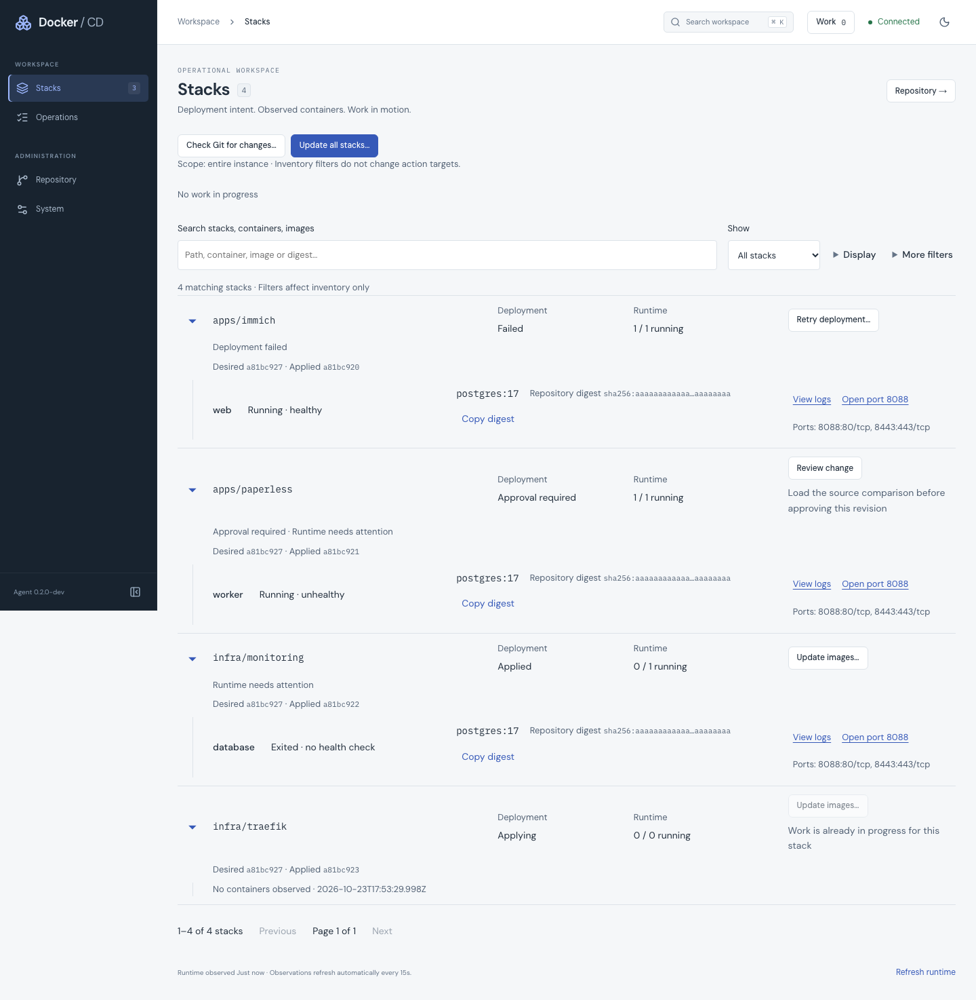
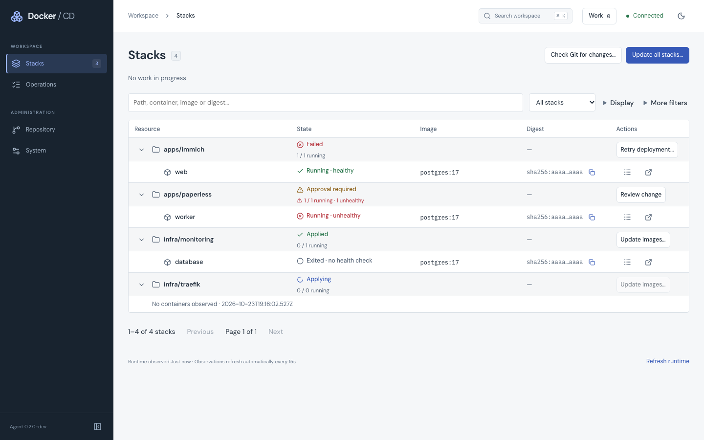

Same isolated four-stack / three-container fixture. Desktop document: 1474px → 900px. Native shared columns, 48px stack rows and 44px container rows. These are fixture captures; the running demo was not rebuilt.
Verification notes and limitations · Desktop geometry · Mobile geometry

